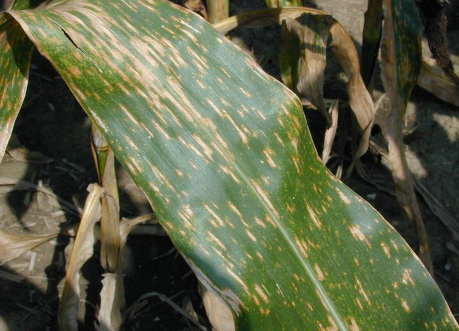
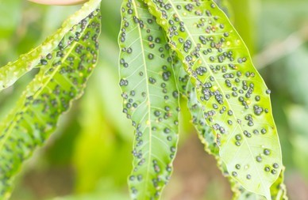

Crop Protection
PESTICIDES are not recent-ly inventions(found)!
Many ancient civilizations used pesticides to protect their crops from insects and pests.
Ancient Sumerians used elemental sulfur to protect their crops from insects. Whereas, Medieval farmers experimented with chemicals using arsenic, lead on common crops.
The Chinese used arsenic and mercury compounds to control /body lice and /other pests. While, the Greeks and Romans used oil, ash, sulfur, and other materials to
protect themselves, their livestock, and their crops from various pests.
TYPES
Insecticides – insects
Herbicides – plants
Rodenticides – rodents (rats & mice)
Bactericides – bacteria
Fungicides – fungi
Larvicides – larvae
Chemically-related pesticides:
Organophosphate : Most organophosphates are insecticides
Carbamate : Similar to the organophosphorus pesticides
Organochlorine insecticides : They were commonly used earlier, but now many countries have been removed Organochlorine insecticides from their market due to their health and environmental effects and their persistence (e.g., DDT, chlordane, and toxaphene).
Pyrethroid : They were developed in such a way as to maximise their stability in the environment.
Sulfonylurea herbicides : The sulfonylureas herbicides have been commercialized for weed control.
Biopesticides : The biopesticides are certain types of pesticides derived from such natural materials as animals, plants, bacteria, and certain minerals.
Rice
Bacterial Blight

It causes wilting of seedlings and yellowing and drying of leaves.
Symptoms:
Wilting and yellowing of leaves, or wilting of seedlings (also called kresek).
On seedlings, infected leaves turn grayish green and roll up. As the disease progresses, the leaves turn yellow to straw-colored and wilt, leading whole seedlings to dry up and die.
Kresek on seedlings may sometimes be confused with early rice stem borer damage.
Management:
Use balanced amounts of plant nutrients, especially nitrogen.
Ensure good drainage of fields (in conventionally flooded crops) and nurseries.
Keep fields clean.
Brown Spot
Brown spot is a fungal disease that infects the coleoptile, leaves, leaf sheath, panicle branches, glumes, and spikelets.Its most observable damage is the numerous big spots on the leaves which can kill the whole leaf.
Symptoms:
Infected seedlings have small, circular, yellow brown or brown lesions that may girdle the coleoptile and distort primary and secondary leaves.
Starting at tillering stage, lesions can be observed on the leaves. They are initially small, circular, and dark brown to purple-brown.
Management:
Monitor soil nutrients regularly
Apply required fertilizers
For soils that are low in silicon, apply calcium silicate slag before planting.
Bakanae
Bakanae is a seedborne fungal disease. The fungus infects plants through the roots or crowns. It then grows systemically within the plant.
Infected plants are abnormally tall with pale, thin leaves.
Symptoms:
Check for roots growing from above-ground nodes on the stem.
Check for white powdery growth at the base or on the lower portion of the infected plants.
Management:
Use clean seeds to minimize the occurrence of the disease.
Use salt water to separate lightweight, infected seeds during soaking.
Use fungicides as seed treatments.
Wheat
Wheat Leaf Rust / Brown Rust
Symptoms:
The postules are circular or slightly elliptical, smaller than those of stem rust and contain masses of orange to orange-brown Urediospores.
Spread:
uredospores from hills.
Management:
Mixed cropping with suitable crops.
Avoid excess dose of nitrogenous fertilizers.
Spray Zineb at 2.5 kg/ha or Propioconazole @0.1%.
Grow resistant varieties like PBW 343, PBW 550, PBW 17.
Wheat Powdery Mildew

Symptoms:
Greyish white powdery growth appears on the leaf, sheath, stem and floral.
Powdery growth later become black lesion and cause drying of leaves and other parts.
Management:
Spray Wettable sulphur 0.2% or Carbendzim @ 500 g/ha.
Ragi
Blast
Symptoms:
Infects at any stage of the growth from the seedling to the grain formation stage.
The infection appears in the nursery from second week of germination and spread quickly to entire nursery as well as to main field.
The spindle shaped spots appear on leaves in the main field. Several spots coalesce and cause drying of foliage.
Maximum damage is caused by the neck blast. The neck region turns black and shrinks.
Management:
Use disease free seeds
Grow resistant varieties like CO RA (14), Paiyur (RA)-2, GPU-28, GPU-45,GPU-48, L-5.
Spray Pseudomonas fluorescens (Pf1) at 2 g/lit of water. First spray immediately after noticing the symptom. Second and Third sprays at flowering stage at 15 days interval.
Seed treatment with carbendazim @ 1 gm/Kg of seed.
Spray Carbendazim 0.1% in nursery 10-12 days after sowing. Repeat the spray 20-25 days after transplanting and 40 to 45 days after transplanting.

Seedling Blight / Leaf Blight / Leaf Spot

Symptoms:
The pathogen affects both seedling and the adult plants.
Minute, oval, light brown lesions on the young leaves and become dark brown.
Several such lesions coalesce to form large patches of infection on the leaf blade. The affected blades wither prematurely and the seedlings may be killed.
Linear oblong and dark brown spots appear on the leaves of grown up plants. The leaves give blightening appearance.
Management:
Treat the seeds with Captan or Thiram @4g/Kg.
Spray Mancozeb @ 1.25Kg/ha
Spray 1% Bordeaux mixture or Copper oxy chloride or Dithane Z-78 (2g/lit. water)
Mosaic
Symptoms:
Infection may occur at all stages of plant growth but the symptoms become most prominent from 4 to 6 weeks after planting.
The first symptom is chlorosis, followed by mosaic mottling and severe stunting of the plant.
The entire plant becomes pale, dwarfed and sterile.
Rarely the affected plants come to ear and if formed the panicle is mostly chaffy.
Management:
Cultural
Rogue out the affected plants
Crop Rotation
The disease intensity can be reduced with heavy doses of phosphatic fertilizers combined with fortnightly sprays with a combination of fungicide and insecticide.
Chemical Method
Spray Methyl dematon 25 EC 500 ml/ha on noticing symptoms and repeat twice if necessary at 20 days intervals for control of insect vectors.
Sugarcane
Eye Spot

Disease emergence favored by cloudy weather, high humidity and low night temperatures or wet leaves from precipitation or irrigation.
Symptoms:
Small water-soaked spots on leaves; elongated water-soaked spots in shape of an eye; straw colored lesions with reddish brown center develop from water-soaked lesions.
Management:
Disease can be controlled through the application of appropriate foliar fungicides.
Pineapple Disease
Primarily a disease of setts; fungus enters cut ends of stem or through other wounds.
Symptoms:
Setts not rooting; central soft portion of set has red discoloration which turns brown-black; cavities in infected internodes; In older canes leaves may be yellowing and plant appears withered; cut stem has a strong smell of pineapple.
Management:
The most effective method of managing the disease is through the use of resistant sugarcane varieties; if planting varieties that are susceptible to the disease then plant them in dry, well-draining soils.
Red Rot
Disease has eliminated several varieties of sugarcane.
Symptoms:
Yellowing, drying leaves; elongated red lesions on leaf midribs which may develop a straw yellow center; splitting open the stalk lengthwise reveals reddish patches of tissue interrupted by white areas; vascular tissue may also be red.
Management:
Planting resistant varieties of sugar cane is the most effective method of controlling the disease; remove crop debris from the plantation to reduce inoculum levels; rogue diseased plants; harvest crop promptly if growing a susceptible variety; treating seed pieces with hot water prior to planting can reduce the incidence of the disease but foliar fungicide application has proved to be an ineffective method of control.
Cotton
Alternaria leaf spot
Plants stressed by drought, nutrient deficiency and other pests are more susceptible to the disease; fungus spreads rapidly in dense canopies, especially during periods of warm, wet weather.
Symptoms:
Small, circular brown lesions on cotyledons and seedling leaves which expand and develop a concentric pattern; necrotic areas coalesce and often have a purple margin; centers of lesions may dry out and drop form the plant creating a "shot-hole" appearance on the leaves.
Management:
Plow crop residue into the soil to reduce inoculum levels; provide plants with adequate irrigation and nutrients, particularly potassium; applications of appropriate foliar fungicides may be required on susceptible cultivars.

Asochyta Blight

Disease emergence is favored by cool, wet weather.
Symptoms:
Brown or gray spots on leaves surrounded by a red halo; elongated red-purple cankers on stems cause the wilting and death of leaves above.
Management:
No fungicides are currently registered for use in cotton; plow crop debris into soil after harvest; crop rotation has little to no effect of control of disease.
Cercospora Leaf Spot
Fungus overwinters in crop debris from previous growing season; commonly found alongside Alternaria leaf spot and other foliar disease.
Symptoms:
Circular red lesions on leaves which enlarge and turn white or gray in the center; lesions often have a pattern of concentric rings and possess a red margin; dark gray spore masses form in the centers of the lesions making them appear dark gray.
Management:
Plow crop residue into the soil to reduce inoculum levels; provide plants with adequate irrigation and nutrients; applications of appropriate foliar fungicides may be required on susceptible cultivars.

Tea
Algal Leaf Spot Of Tea

Symptoms::
Leaves develop lesions that are roughly circular, raised and purple to reddish-brown.
Management:
Avoid plant stress.
Avoid poorly drained sites.
Promote good air circulation in the plant canopy to reduce humidity and duration of leaf wetness.
Removal of infected portions by spraying of Bordeaux mixture.
Destruction of affected plant portions.
Improving the nutrient status of the soil by application of nitrogen, phosphorus and potassium.
Tea Brown Blight, Grey Blight
Symptoms:
Small, oval, pale yellow-green spots first appear on young leaves.
Often the spots are surrounded by a narrow, yellow zone.
Leaves of any age can be affected.
Management:
Avoid plant stress.
Grow tea bushes with adequate spacing to permit air to circulate and reduce humidity and the duration of leaf wetness.
Spray Copper Oxy Chloride or Bordeaux mixture 0.1% during winter season and Summer season.
Horsehair Blight
Symptoms:
Black fungal threads resembling horse hair are attached to upper branches and twigs by small brown discs.
The fungus penetrates and infects the twigs from the discs and produces volatile substances that cause rapid leaf drop.
Management:
Remove a and destroy all crop debris from around plants.
Prune out infected or dead branches from the plant canopy.
Coffee
Bacterial Blight
Disease can be spread long distance by the movement of infected seedlings or within the field by water splash; bacteria can enter the plant through wounds.
Symptoms:
Water-soaked spots on leaves which dry out and become brown and necrotic with yellow halos; necrosis of shoot tips which spreads rapidly down branches; leaves turn black and die off but remain attached to tree.
Management:
Protective sprays of copper should be applied to the plants just before the onset of the rainy season and should be continued right through to the short rains.

Cercospora leaf spot (Brown eye spot, Berry blotch)
Disease can be spread by wind, water-splash and through human movement through fields, particularly when plants are wet.
Symptoms:
Brown spots on foliage which enlarge and develop gray-white center and a red-brown margin; lesions may also be surrounded by a yellow halo or may have a burned appearance if lesions are very numerous; infected leaves may drop from plant prematurely; lesions on green berries are brown and sunken and may have a purplish halo; infected red berries may have large black sunken areas.
Management:
Ensure crop is adequately fertilized as nutrient deficient plants are more susceptible to the disease; remove all crop debris from filed after pruning to prevent build up of inoculum; good plant spacing and pruning to open up the canopy promotes good air circulation around foliage and protects against disease; if disease does occur then it can be controlled with the use of copper fungicides where available.
Coffee berry disease (CBD)
Symptoms:
Dark sunken lesions on green berries; berries dropping from plant; mummified berries.
Very serious diseases; can destroy up to 80% of crop.
Management:
Protective sprays of copper containing fungicides can help to control the disease; any diseased berries should be removed from plants; resistant varieties are available and should be planted in areas where disease is present.
.jpg)
Maize
Anthracnose
Fungus survives the winter on crop debris. Emergence of disease is favored by high temperatures and extended periods of wet and cloudy weather - seedlings and mature plants are most susceptible to the disease.
Symptoms:
Anthracnose symptoms vary widely depending on numerous factors such as genotype, age of plant and environmental conditions.
Small oval or elongated water-soaked spots which enlarge up to 15 mm long appear on leaves.
Lesions develop a tan center and red-brown or orange border.
Lesions may coalesce to form large necrotic(dead) patches.
Severely infected leaves on susceptible hybrids may wither and die.
Fungal fruiting bodies develop on dead tissues and may produce pink or orange spore masses.
Top dieback and stalk rot.
Management:
Plant hybrids resistant to anthracnose; rotating crops and plowing crop debris into soil may help reduce incidence of early season infections.
Cercospora leaf spot (Gray leaf spot)
Disease emergence is favored in areas where a corn crop is followed by more corn with no rotastion; severity and incidence of disease is likely die to continuous corn culture with minimum tillage and the use of susceptible hybrids in in the midwestern corn belt of the USA; prolonged periods of foggy or cloudy weather can cause severe Cercopora epidemics.
Symptoms:
Small necrotic spots with chlorotic halos on leaves which expand to rectangular lesions 1-6 cm in length and 2-4 mm wide; as the lesions mature they turn tan in color and finally gray; lesions have sharp, parallel edges and are opaque; disease can develop quickly causing complete blighting of leaves and plant death.
Brown Spots with yellow rings throughout the leaf during the growing period of the Cassava.
Lesions that are 0.15-0.2 cm in diameter.
Serious cases can lead to holes throughout the lesions on the leaf.
Management:
Plant corn hybrids with resistance to the disease; crop rotation and plowing debris into soil may reduce levels of inoculum in the soil but may not provide control in areas where the disease is prevalent; foliar fungicides may be economically viable for some high yeilding susceptible hybrids.

Charcoal Rot
Emergence of the disease is favored by warm soils with a low moisture content; fungus overwinters in the soil and can also survive on other host plants which include sorghum and soybean.
Symptoms:
Symptoms are usually first apparent at the tasseling stage; plant stalks become shredded and pith is completely rotted with stringy strands of vascular tissue left intact; small, black fungal fruiting bodies are visible in the vascular strands and give the tissue a gray coloration; fungus grows into internodes of the stalk causing the plant to ripen early and causing the stalk to weaken; plant may break.
Management:
There are currently no available fungicides to treat the disease; avoid stressing plants by practicing good water management; rotating crops with small grains may help reduce disease incidence.
Black Pepper
Anthracnose
Cracking on berries encourages secondary infections with other fungal pathogens.
Symptoms:
Small brown specks with yellow halos on leaves, spikes and berries; defoliation and spike shedding;cracks on berries
Management:
As anthracnose is primarily a disease that occurs during the rainy season, systemic fungicides are required to prevent chemicals leaching from the plant; 1% Bordeaux mixture can be applied during monsoon season; metalaxyl and fosetyl are also effective.
Charcoal Rot

Fungus had a wide host range and affects beans, tobacco, soybean, pigeon pea and many other crops; disease is primarily spread via microsclerota in the soil.
Symptoms:
Discoloration of vine at soil line; cankers on stem may spread upwards; leaves may wilt and drop from plant; numerous small black sclerota (fungal fruiting bodies) develop in affected tissues and can be used to diagnose the disease.
Management:
Organic soil amendments such as the addition of manure or neemcake can be used to reduce levels of inocuum in the soil.
Root Rot(Foot Rot)
Can be transmitted to a field through infected runners or roots and adhering soil; foot rot is a destructive disease in Malaysia and Indonesia; emergence of the disease is favored by wet, poorly draining soil.
Symptoms:
Black water soaked lesions on leaves and/or stems during wet weather; symptoms usually develop on lower leaves which have been splashed by water; leaves wilt rapidly and drop from plant; entire vine is killed within a period of days to weeks.
Management:
Avoid uneccessary tilling of soil which can be conducive to spreading the pathogen; a cover crop of grass can help prevent water splash on the plants and thus the sread of the fungi; amending the soil with neem cake suppresses the Phytophthora and provides nutrients to the vines; systemic fungicides such as metalaxyl and fosetyl can give some measure of control; efforts are being made to establish resistant verieties.
.jpg)
Mango
Algal Leaf Spot

Disease affects many fruit trees in the tropics; infection is unsightly but often harmless.
Symptoms:
Orange rusty spots on both upper and lower leaf surfaces which may coalesce to form large irregularly shaped patches; scraping away the orange spots reveals a grayish discoloration of the leaf lamina underneath.
Management:
Ensure that trees are properly pruned and fertilized to promote vigor; remove all weeds from around tree bases; employ a wider tree spacing to increase air circulation around the trees; badly infested trees can be treated with copper containing fungicides.
Anthracnose
Disease emergence favored by wet conditions; serious disease of mango wherever it is grown.
Symptoms:
Small, dark spots on flowers; spots coalesce to cover entire panicle; infected flowers dropping from tree; dark flecks or spots with yellow halo on young leaves; dark, irregular, sunken lesions on fruit; fruits dropping from tree before ripe.
Management:
Susceptible mango varieties should be protected with fungicide in commercial production and the timing of the applications are critical to successful control; appropriate fungicide should be applied during flowering and fruit development.

Powdery Mildew
Found in all mango growing regions; outbreaks sporadic but can be severe.
Symptoms:
Gray-white powdery growth on leaves, flowers and/or fruit; curled, distorted shoots; fruit aborted and dropping from tree.
Management:
Fungicides are very effective at controlling powdery mildew if applied at the first sign of the disease; chemical sprays only need be applied at flowering and fruit set.
Orange
Anthracnose
Disease common during wet Springs or long periods of wet weather late in season.
Symptoms:
Leaves dropping prematurely; leaves covered in dark fungal spores; red to green or black streaks on the mature fruits.
Management:
If disease is damaging then appropriate fungicides should be applied to whole tree.
Armillaria Root Rot(Mushroom Root Rot)

Healthy trees are usually infected by infected pieces of wood or tree stumps which have been left in the ground after an orchard is cleared.
Symptoms:
Trees may wilt suddenly and collapse or decline slowly; leaves become chlorotic and drop from tree; if large parts of root are destroyed then whole canopy is affected; trunk may have area of rotting bark at the base; lesions on the trunk resemble Phytophthora gummosis; clusters of mushrooms may be present at the bottom of the tree and fan shaped mycelial mats are often present between the bark and the wood.
Management:
Disease is difficult to control once it becomes established in an orchard; affected trees showing signs of decline should be removed along with as much of the roots system as possible; area where infected tree was should not be replanted with health citrus for a period of at least one year; fumigating soil can help to reduce soil inoculum but is not always completely effective.
Black Root Rot
Serious disease of glasshouse grown citrus trees; pathogen usually drops to non-damaging levels after tree is transplanted to the field.
Symptoms:
Small brown-black lesions on roots which may coalesce and turn entire root black; root cortex may slough off to reveal the vascular tissue below; leaves of plant may be chlorotic.
Management:
Keep glasshouses well lit and warm during winter to encourage vigorous root growth; use good quality potting soil which provides good aeration

Rubber
Leaf Spot / Bird's Eye Spot

Symptoms:
Numerous small circular spots scattered on the leaf surface.
Spot have transparent centers and distinct brown borders.
Infected young leaves: black and wrinkled.
Infected older leaves:necrotic tissues produce shot-holes.
Management:
Weekly spaying of Dithane M-45(6tbsp./16li of water)on fully expanded leaves.
Anthracnose And Leaf Blight
Symptoms:
Leaves affected are unhealthy and yellowish green.
In poorly grown seedlings, more or less circular brown spots up to 5mm diameter with distinct brown margins.
lesions occur more at the edges of the leaves and move towards center.
Management:
Proper drainage of the area planted.
Correct nutrition of the seedlings/trees.
Fungicide treatment by spraying the expanding leaves with either Vitigran blue,Daconil or Cupravit at the rate of 2g a.i/literof water(10-11 tbsp/4gal.)at least 4 rounds at weekly intervals
Stem Bleeding

Symptoms:
Releases of black exudates from the stem.
Management:
Fungicidal treatment